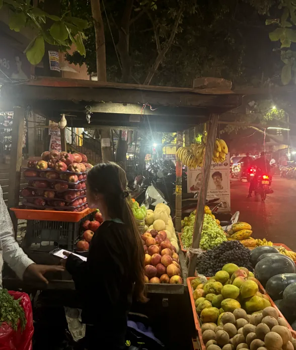
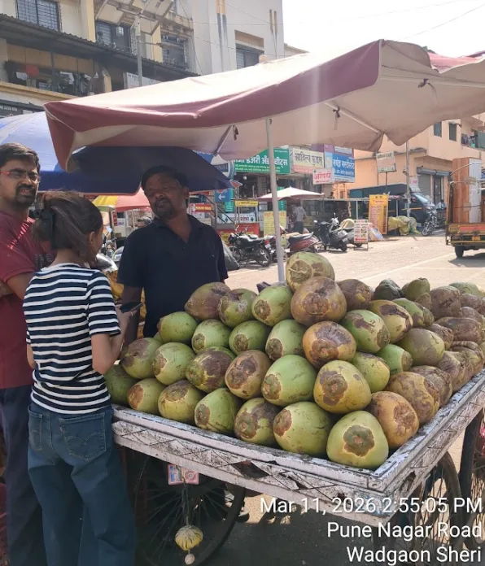

03 — Primary research
We went to the vendors.
Six fruit & vegetable cart vendors were interviewed on-site through contextual inquiry, followed by affinity mapping to surface patterns across interviews.
Questionnaire — primary research
- What is your name and age?
- Location where you sell fruits/vegetables.
- Approximate distance travelled with the cart daily.
- Frustration points when moving the cart from one place to another?
- How do you store fruits and vegetables on your cart?
- Are some items stored or displayed at the bottom of the cart?
- Approximately how much produce waste happens daily?
- What do you usually do with spoiled fruits and vegetables?
- What challenges do you face during different weather conditions?
- Does your method of storing/selling change during different seasons?
- What is the biggest challenge you face while selling?
Fieldwork at a glance
Contextual inquiry → affinity mapping · Tingre Nagar & Wadgaon Sheri · 11 March 2026


Affinity mapping
What vendors told us, in their own words
Physical strain from cart mobility
Pushing 5–10 km daily with a heavy load and poor wheels strains shoulders, legs, back and arms.
Challenges in steering & control
Narrow streets, no proper steering or brakes — vendors use body weight, sometimes lifting the cart to turn.
Exposure to weather
Constant heat, sun and rain cause fatigue and dehydration, and cut customer footfall.
Spoilage of produce
Heat accelerates spoilage; wet cloth or shade are the only — often insufficient — fixes.
Limited, unorganized storage
Produce gets piled together: crushing damage, poor airflow, harder for customers to see.
Waste management
Spoiled produce waits at the bottom of the cart or in plastic bags — no dedicated method.
Long working hours
10–12 hours a day, mostly standing or walking, from early morning to late evening.
Makeshift fixes already in use
Umbrellas, wet cloth, plastic sheets — informal solutions that work, but aren’t built into the cart.